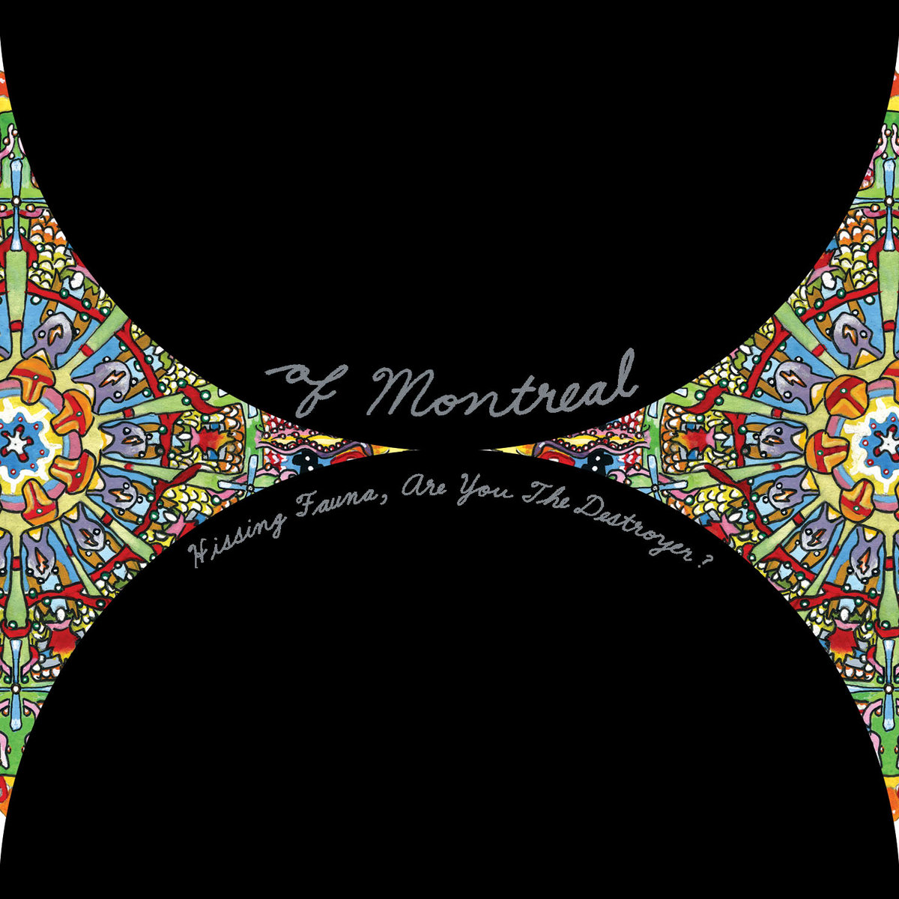

Hissing Fauna, Are You The Destroyer? (2007)
Track Listing
- Suffer for Fashion - 2:59
- Sink the Seine - 1:04
- Cato as a Pun - 3:02
- Heimdalsgate Like a Promethean Curse - 3:18
- Gronlandic Edit - 3:24
- A Sentence of Sorts in Kongsvinger - 4:54
- The Past is a Grotesque Animal - 11:52
- Bunny Ain't No Kind of Rider - 3:51
- Faberge Falls for Shuggie - 4:31
- Labyrinthian Pomp - 3:21
- She's a Rejecter - 4:02
- We Were Born the Mutants Again with Leafling - 4:57
Featured Track
Gronlandic Edit
Lyrics
Nihilists with good imaginations
I am satisfied hiding in our friend's apartment
Only leaving once a day to buy some groceries
Daylight, I'm so absent minded, nighttime meeting new anxieties
So am I erasing myself? Hope I'm not erasing myself
I guess it would be nice to give my heart to a God
But which one, which one do I choose?
All the churches filled with losers, psycho or confused
I just want to hold the divine in mine
And forget, all of the beauty's wasted
Let's fall back to earth and do something pleasant, say it
We fell back to earth like gravity's bitches, bitches
Physics makes us all its bitches
I guess it would be nice to help in your escape
From patterns your parents designed
All the party people dancing for the indie star
But he's the worst faker by far in the set
I forget, all of the beauty's wasted
I guess it would be nice
Show me that things can be nice
I guess it would be nice
Show me that things can be nice
You've got my back in the city
You've got my back 'cause I don't want to panic
You've got my back in the city
You've got my back 'cause I don't want to panic